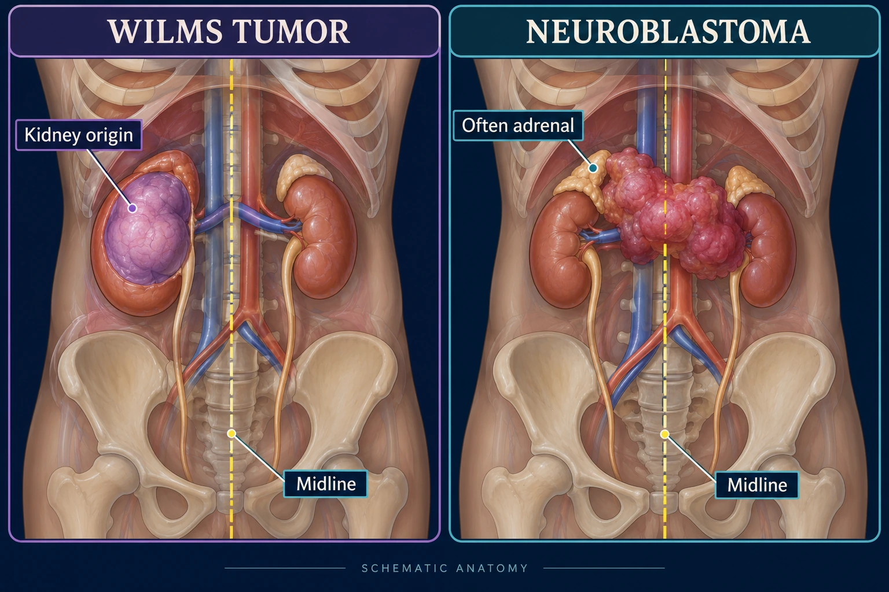
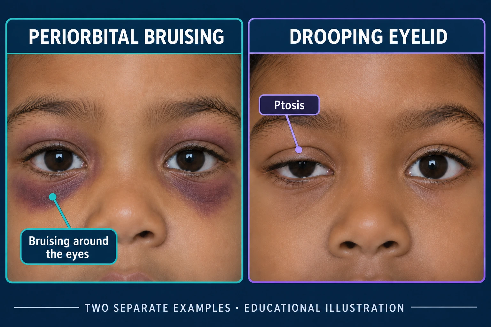
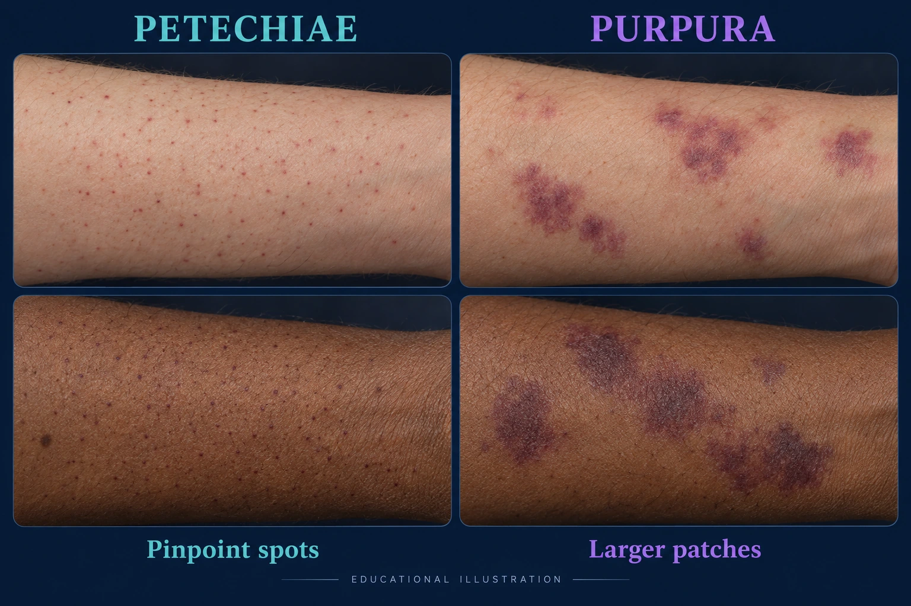
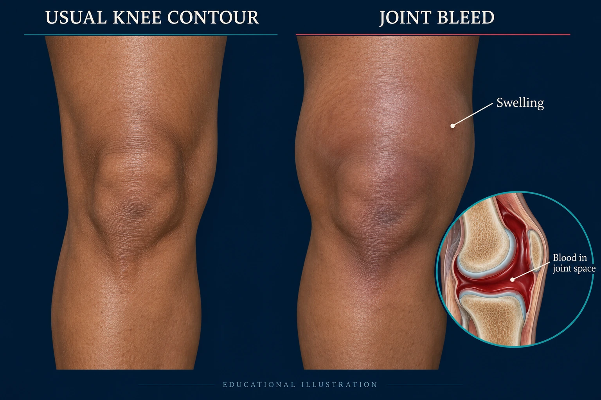

Wilms (nephroblastoma)
The kidney
NG-379 · NUR 235 · VISUAL STUDY GUIDE
Wilms versus neuroblastoma, osteosarcoma versus Ewing, and the two bleeding disorders that look alike until you check the labs.
Read one comparison at a time. Tap any picture to enlarge it.
01 / START WITH THE LOCATION

🔎 Enlarge pictureFind the kidney, the adrenal region and the dashed midline. These drawings show the course comparison; actual tumors vary.
Anatomy reference: NCI · Wilms tumor and NCI · neuroblastoma.
The kidney
Sympathetic nerve tissue, often the adrenal gland
2–5 years
Under 5, often under 2
Smooth, firm, one-sided
Irregular, crosses the midline
Hypertension, blood in the urine
Bruising around the eyes, bone pain, a droopy eyelid
Usually a parent, while bathing or dressing the child
Do not palpate. Sign the bed. Handle gently.

🔎 Enlarge pictureNotice the purple discoloration around the eyes.
Notice one upper eyelid resting lower than the other.
Two separate examples of possible signs. Their appearance alone does not establish a diagnosis. Reference: NCI.
02 / FIND THE PART OF THE BONE
The bone drawings locate the lesion. The insets illustrate the course’s sunburst and onion-skin patterns; they are not patient X-rays.
These are learning cues, not unique diagnostic patterns. See clinical radiology examples and explanations.
Metaphysis — the end of a long bone, classically around the knee
Diaphysis — the shaft — and flat bones
Pain worse at night, a palpable mass, a limp
The same, plus fever and a raised white count
A sports injury
Osteomyelitis
A “sunburst” pattern
An “onion-skin” pattern
Chemotherapy plus surgery
Chemotherapy plus radiation — it is radiosensitive
The lungs — a new cough or breathlessness is not nothing
03 / LOOK AT THE BLEEDING PATTERN
Both children bruise. The pattern of the bleeding, and one lab, separate them.

🔎 Enlarge pictureSmall, flat, pinpoint spots beneath intact skin.
Larger patches of bleeding beneath the skin.
Examples on two skin tones. Color and visibility vary. These signs are not specific to ITP. Reference: NHLBI.

🔎 Enlarge pictureCompare the visible knee contours, then use the inset to locate blood inside the joint space. Swelling, pain, warmth and limited movement are the course cues; they cannot all be judged from a picture.
A missing clotting factor — VIII in A, IX in B
Platelets destroyed by the immune system, often after a virus
X-linked — boys affected, mothers carry it
Not inherited
Into a joint — warm, swollen, painful, will not bend
Into the skin — petechiae, purpura, nosebleeds
aPTT long; platelets normal
Platelets low; PT and aPTT normal
Factor replacement; desmopressin for mild A
Often watchful waiting; IVIG or steroids if severe
Rest, ice, compress, elevate — and give the factor. Immobilize the joint in a position of comfort; do not exercise it while it is actively bleeding.
Long term: physiotherapy matters, because repeated bleeds destroy the joint.